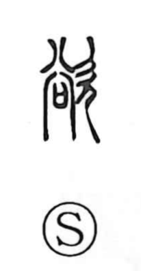

欲

Uncategorized
Kun: hoshii, hossuru, hoshigaru | On: yoku
desire ・ to want ・ to wish
Explanation
欲 is a phono-semantic character built on a specific form of 谷 used as a phonetic to signal the on-reading yoku (also seen in 俗, 容, and 浴), distinct from the 谷 read koku meaning “valley.” In the related graph 容, the writing depicts a sacred “sai” vessel into which petitions to the gods are placed within an ancestral mausoleum, with a faint manifestation of numinous breath appearing above it. 欲 expresses the yearning to behold that numinous form, and from this sense of longing it came to mean “to desire, to wish.” The same phonetic element appears in 浴 (yoku, “to bathe”). In Japanese usage, 欲 also serves in the adjective hoshii, “to want.”